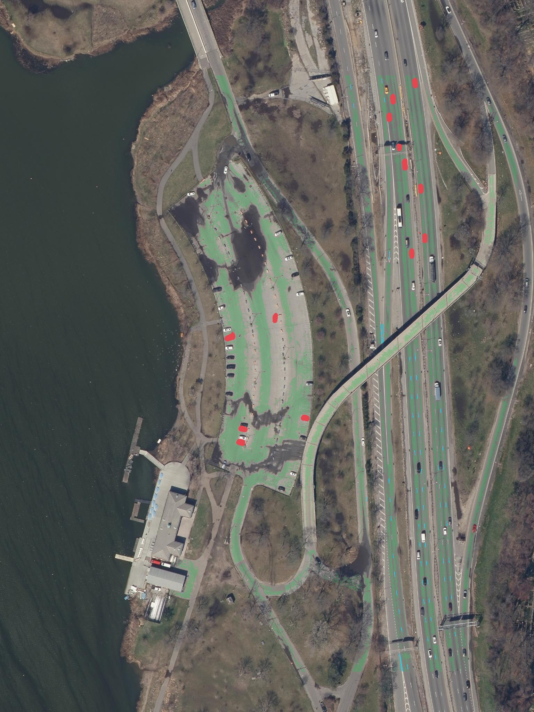
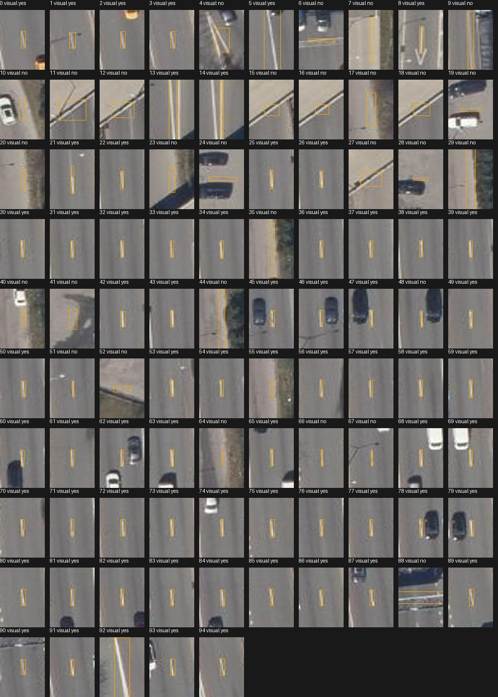
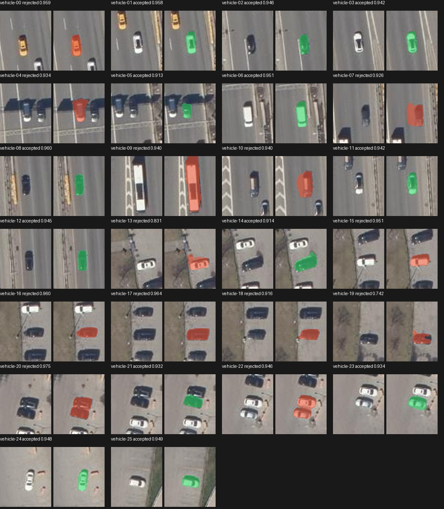

Meadow Lake · Queens · source reconstruction pilot
Real pavement.
Traceable decisions.
A 347 × 463 metre area rebuilt from measured terrain and NYC street geometry, with source-colored pavement and observed paint. AI helps exclude photographed vehicles from color samples.
This page shows the evidence behind the game assets. The images below are analysis overlays, not screenshots of the reconstructed game.
Start with the photograph.
The same 2024 NYC aerial tiles used by the game supply pixel evidence. Green pixels contribute to the pavement colors. Red pixels are excluded by accepted vehicle masks. Cyan pixels are reviewed paint candidates retained in the appearance file.



The game uses median source colors with a small amount of fine surface variation. It does not paste this photograph onto reconstructed pavement, so cars and old shadows are not baked into those replacement materials. Photo color is an appearance estimate, not calibrated material reflectance; roughness and fine variation are rendering approximations.
Appearance data and provenanceColor sample maskVehicle exclusion mask


Measured heights build the road.
NYC's 2022 roadbed and parking footprints define coverage. A one-metre 2017 LiDAR terrain grid is constrained by 47 selected ground survey elevations from 2022. Source holes and boundaries remain intact; the mesh and driving surface use the same terrain interpolation.
| Source evidence | Loaded | How it is used |
|---|---|---|
| Elevation points | 115 | 47 ground constraints; maximum fit residual 2.23 cm. This measures fit to input points, not independent survey accuracy. |
| Terrain | 349 × 465 nodes | 78,837 pavement triangles covering 31,684 m²; outer 20 m blends toward existing measured terrain. |
| Pavement edges / curb cuts | 33 / 1 | Retained as surveyed evidence; no curb height is inferred. |
| Bridge footprints | 2 deferred | Kept out of ground resurfacing because the available vertical evidence is incomplete. |
The two bridges are not reconstructed by this pilot. Their footprint export contains zero Z values. Nine bridge spot elevations do not establish a complete deck, crossfall or connected approaches. Those surfaces retain the existing rendering while the evidence stays available for a later reconstruction pass.
No new lamps, curb dimensions, bridge supports or unseen infrastructure are invented. Sampled heights remain estimates between measurements, and some terrain near bridge approaches is still steep.
Overlapping source polygons are partitioned consistently, removing 33.97 m² of duplicate ground coverage. The terrain boundary blend is approximate: the builder's sampled boundary audit records a 4.35 cm maximum discrepancy against its required neighboring terrain, not a guarantee of exact continuity between samples.
Survey mesh and source hashesAll survey decisionsFinal terrain gridUnmodified source terrain
Visible paint, checked against its pixels.
Classical local-contrast analysis found 95 thin, bright components inside mapped pavement. Source-image inspection rejected 29 bridge seams, vehicle reflections and uncertain edges. One further component overlapped an accepted vehicle exclusion, leaving 65 observed paint fragments. SAM did not classify these as paint.
The contact sheet records the visual inspection stage. “Visual yes” means the crop passed that check; candidate 5 was subsequently excluded by the vehicle-mask check. Markings are clipped again to supported road triangles at runtime. Faint or hidden lines are left incomplete. No parking-stall markings passed review in this area.

What the AI actually did.
Meta SAM ViT-B ran locally on 26 vehicle boxes selected by inspecting the aerial photograph. The box selection supplies the identity; SAM refines the pixel boundary. The highest model-scored mask is selected before checking its containment.
A vehicle exclusion passes when predicted mask IoU is at least 0.75, at least 90% of its pixels lie inside the reviewed box, and its area is 20–1,800 image pixels. Thirteen passed and thirteen failed. Accepted masks are expanded by two pixels for conservative sample exclusion. Brightness and contrast trimming removes additional bright objects and dark shadows from color samples, without claiming to detect every vehicle or shadow.

Inspect all 26 masks and their gates
| Candidate | Decision | Model IoU estimate | Box containment | Pixels | Evidence |
|---|---|---|---|---|---|
| vehicle-00 | Rejected | 0.959 | 80.6% | 268 | Mask PNG |
| vehicle-01 | Accepted | 0.958 | 93.3% | 269 | Mask PNG |
| vehicle-02 | Accepted | 0.946 | 90.1% | 232 | Mask PNG |
| vehicle-03 | Accepted | 0.942 | 98.9% | 270 | Mask PNG |
| vehicle-04 | Rejected | 0.934 | 73.4% | 353 | Mask PNG |
| vehicle-05 | Accepted | 0.913 | 97.7% | 172 | Mask PNG |
| vehicle-06 | Accepted | 0.951 | 100.0% | 332 | Mask PNG |
| vehicle-07 | Rejected | 0.926 | 71.7% | 460 | Mask PNG |
| vehicle-08 | Accepted | 0.960 | 100.0% | 242 | Mask PNG |
| vehicle-09 | Rejected | 0.940 | 88.8% | 968 | Mask PNG |
| vehicle-10 | Rejected | 0.940 | 69.8% | 480 | Mask PNG |
| vehicle-11 | Accepted | 0.942 | 98.5% | 264 | Mask PNG |
| vehicle-12 | Accepted | 0.945 | 99.6% | 234 | Mask PNG |
| vehicle-13 | Rejected | 0.831 | 66.6% | 335 | Mask PNG |
| vehicle-14 | Accepted | 0.914 | 97.4% | 380 | Mask PNG |
| vehicle-15 | Rejected | 0.951 | 86.3% | 278 | Mask PNG |
| vehicle-16 | Rejected | 0.960 | 86.0% | 258 | Mask PNG |
| vehicle-17 | Rejected | 0.964 | 80.6% | 341 | Mask PNG |
| vehicle-18 | Rejected | 0.916 | 78.6% | 262 | Mask PNG |
| vehicle-19 | Rejected | 0.742 | 55.3% | 226 | Mask PNG |
| vehicle-20 | Rejected | 0.975 | 81.2% | 494 | Mask PNG |
| vehicle-21 | Accepted | 0.932 | 100.0% | 258 | Mask PNG |
| vehicle-22 | Rejected | 0.946 | 79.9% | 513 | Mask PNG |
| vehicle-23 | Accepted | 0.934 | 100.0% | 284 | Mask PNG |
| vehicle-24 | Accepted | 0.948 | 98.8% | 243 | Mask PNG |
| vehicle-25 | Accepted | 0.949 | 94.8% | 251 | Mask PNG |


Pinned revision: 70c1a07f894ebb5b307fd9eaaee97b9dfc16068f. Apache-2.0 model weights; local MPS inference. Weights are not shipped to players.
The previous whole-road segmentation trial still has zero accepted masks from 34 candidates. Its gates and outputs have not changed. This pilot uses smaller, reviewable appearance tasks; it does not relabel those failed road masks as successful reconstruction. Inspect the earlier trial.
A repeatable offline build.
Run from a complete repository checkout. Install scripts/requirements-reconstruction-ai.txt in an isolated Python 3.13 environment, and obtain the exact pinned SAM snapshot in an external model directory. The repository's docs/road-pilot.md gives the complete setup, checks and contribution procedure.
python scripts/build-road-pilot.py python scripts/reconstruct-road-appearance.py --model-directory /path/to/sam-cache python -m unittest discover -s tests -p 'test_road_*.py' -v npm test npm run check
Ordinary geometry rebuilds use bundled snapshots. Add --download --cache /tmp/nyc-road-pilot to the geometry command to refresh official sources. AI inference is an offline build step after downloading weights; the running game uses ordinary meshes and data files.
Changing imagery or candidate extraction invalidates the existing visual review. Recheck the proposed features before updating the image and candidate hashes. Rejected evidence stays in the bundle.
Runtime asset indexSurvey manifestAppearance manifestMapped footprints